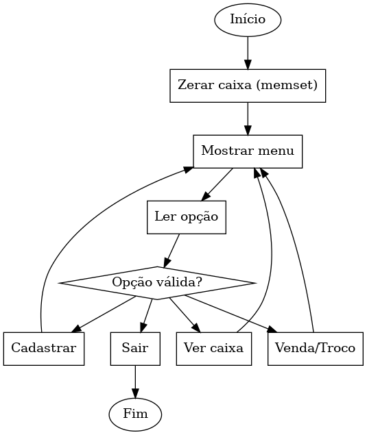
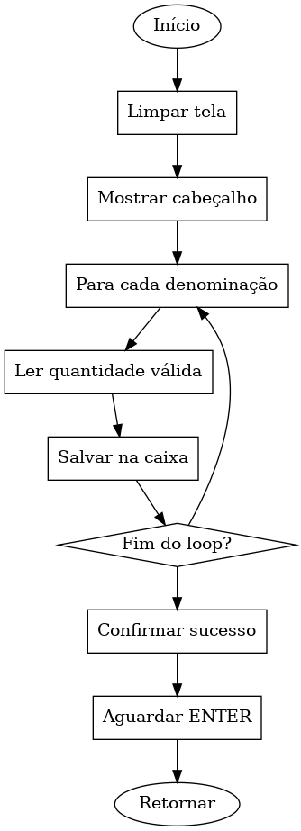
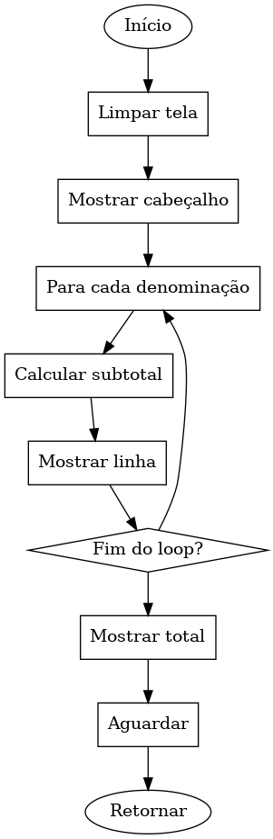
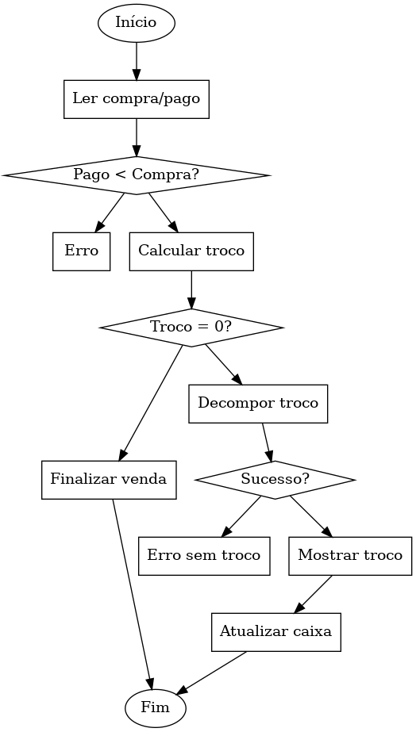
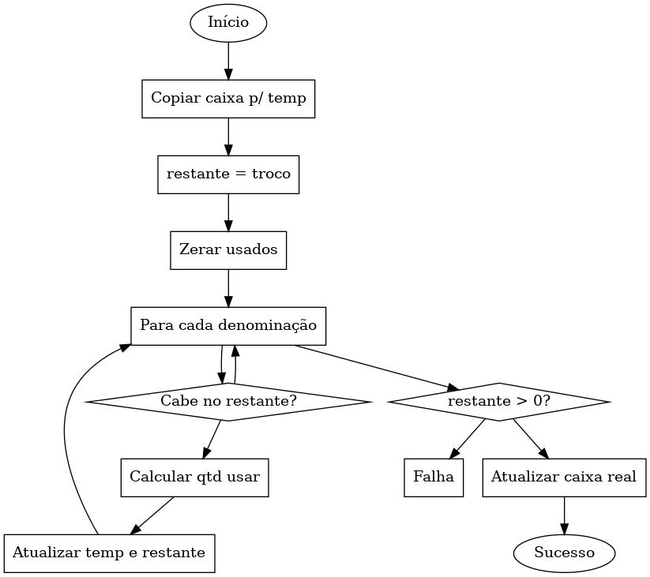

Cadastre notas e moedas, consulte o extrato do caixa e simule vendas com cálculo automático de troco — implementado em C com estruturas, aritmética inteira e algoritmo guloso.
O programa gerencia um caixa real com notas e moedas do sistema monetário brasileiro. O usuário cadastra o estoque inicial, consulta o extrato detalhado e processa vendas — o sistema calcula e desconta o troco exato do caixa automaticamente.
Desenvolvido na disciplina de Algoritmos da UNISANTOS, o trabalho explora fundamentos como structs, ponteiros, arrays, memcpy/memset, aritmética inteira e o clássico algoritmo guloso de decomposição monetária.
Trabalhar com centavos como inteiros evita os problemas de representação de ponto flutuante. Por exemplo, 0.1 + 0.2 ≠ 0.3 em muitas linguagens. Multiplicar por 100 e arredondar garante cálculo exato em todas as operações.
O programa cria uma struct Caixa e zera todos os campos com memset, garantindo que nenhum lixo de memória interfira no estoque inicial.
O usuário informa a quantidade de cada uma das 13 denominações (R$200 a R$0,01). As quantidades são salvas diretamente na struct via ponteiro.
Exibe denominação, quantidade e subtotal de cada item, além do saldo total calculado como soma(quantidade[i] × valor[i]) em centavos.
O programa lê o valor da compra e o valor pago. Se o pagamento for insuficiente, exibe erro. Se o troco for zero, finaliza direto sem acionar o algoritmo.
Itera pelas denominações do maior ao menor. Calcula quantas cabem no restante e quantas há no caixa — usa o menor dos dois. Atualiza um array temporário.
Só se o troco for possível (restante = 0), os dados temporários são copiados para o caixa real com memcpy. Caso contrário, o caixa não é alterado.
/* Definições globais */ #define NUM_DENOMINACOES 13 #define LARGURA 45 const int VALORES[NUM_DENOMINACOES] = { 20000, 10000, 5000, 2000, 1000, 500, 200, 100, 50, 25, 10, 5, 1 }; typedef struct { int quantidade[NUM_DENOMINACOES]; } Caixa; int menu() { limpar_tela(); cabecalho("SISTEMA DE GESTAO DE CAIXA"); printf("\n [1] Cadastrar Notas/Moedas\n"); printf(" [2] Ver Caixa\n"); printf(" [3] Venda e Troco\n"); printf(" [0] Sair\n\n"); return ler_inteiro(" Escolha uma opcao: "); } int main() { Caixa caixa; memset(&caixa, 0, sizeof(caixa)); // zera o estoque int opcao; do { opcao = menu(); switch(opcao) { case 1: cadastrar(&caixa); break; case 2: ver_caixa(&caixa); break; case 3: simular_venda(&caixa); break; case 0: printf("Ate logo!\n"); break; default: printf(" Opcao invalida.\n"); aguardar(); } } while (opcao != 0); return 0; }
void cadastrar(Caixa *c) { limpar_tela(); cabecalho("CADASTRAR NOTAS E MOEDAS"); printf("\n Informe a quantidade de cada denominacao:\n\n"); for (int i = 0; i < NUM_DENOMINACOES; i++) { char prompt[64]; /* monta o texto do prompt com o nome da denominacao */ snprintf(prompt, sizeof(prompt), " %s -> qtd: ", NOMES[i]); /* salva diretamente no caixa original via ponteiro */ c->quantidade[i] = ler_inteiro(prompt); } printf("\n Caixa atualizado com sucesso!\n"); aguardar(); } /* Calcula o saldo total do caixa em centavos */ long long saldo_centavos(const Caixa *c) { long long total = 0; for (int i = 0; i < NUM_DENOMINACOES; i++) { total += (long long)c->quantidade[i] * VALORES[i]; } return total; } void ver_caixa(const Caixa *c) { limpar_tela(); cabecalho("EXTRATO DO CAIXA"); printf("\n %-12s %-8s %s\n", "Denominacao", "Qtd", "Subtotal"); linha('-', LARGURA); for (int i = 0; i < NUM_DENOMINACOES; i++) { long long sub = (long long)c->quantidade[i] * VALORES[i]; printf(" %-12s %-8d R$ %8.2f\n", NOMES[i], c->quantidade[i], sub / 100.0); } linha('-', LARGURA); printf(" %-22s R$ %8.2f\n", "TOTAL EM CAIXA:", saldo_centavos(c) / 100.0); linha('=', LARGURA); aguardar(); }
int decompor(Caixa *c, int troco_cts, int usados[NUM_DENOMINACOES]) { /* copia o estoque para um array temporário */ int temp[NUM_DENOMINACOES]; memcpy(temp, c->quantidade, sizeof(temp)); int restante = troco_cts; memset(usados, 0, NUM_DENOMINACOES * sizeof(int)); for (int i = 0; i < NUM_DENOMINACOES && restante > 0; i++) { if (VALORES[i] > restante) continue; int qtd_necessaria = restante / VALORES[i]; /* usa o menor entre necessário e disponível */ int qtd_usar = (qtd_necessaria < temp[i]) ? qtd_necessaria : temp[i]; usados[i] = qtd_usar; temp[i] -= qtd_usar; restante -= qtd_usar * VALORES[i]; } if (restante != 0) return 0; // troco impossível /* só atualiza o caixa real se o troco foi possível */ memcpy(c->quantidade, temp, sizeof(temp)); return 1; }
void simular_venda(Caixa *c) { limpar_tela(); cabecalho("SIMULAR VENDA E TROCO"); int compra = ler_valor_centavos( "\n Valor da compra (R$): "); int pago = ler_valor_centavos( " Valor pago pelo cliente (R$): "); if (pago < compra) { printf("\n Valor insuficiente!\n"); aguardar(); return; } int troco = pago - compra; printf("\n Troco a devolver: R$ %.2f\n", troco / 100.0); if (troco == 0) { printf(" Sem troco. Venda concluida.\n"); aguardar(); return; } int usados[NUM_DENOMINACOES]; if (!decompor(c, troco, usados)) { printf("\n Caixa sem notas/moedas suficientes" " para o troco.\n"); aguardar(); return; } printf("\n Composicao do troco:\n"); linha('-', LARGURA); for (int i = 0; i < NUM_DENOMINACOES; i++) { if (usados[i] > 0) printf(" %s x %d\n", NOMES[i], usados[i]); } linha('-', LARGURA); printf("\n Venda e troco processados!\n"); printf(" Caixa atualizado.\n"); aguardar(); }
Representação visual do fluxo de execução de cada módulo do sistema de caixa.





Trabalho desenvolvido para a disciplina de Algoritmos — UNISANTOS
Todo o código-fonte do CaixaFácil — em C — está publicado e disponível para consulta, estudo e contribuição.
Sistema de gestão de caixa com cadastro de notas e moedas, extrato e simulação de vendas com troco automático. Implementado em C para a disciplina de Algoritmos — UNISANTOS.